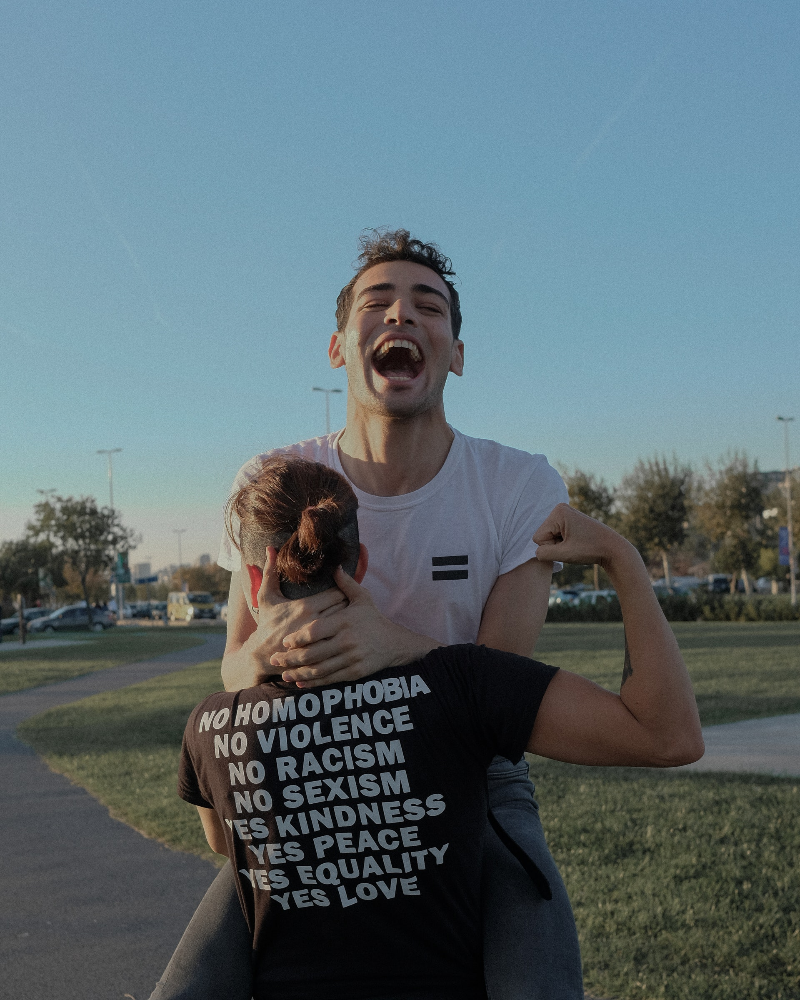

How to Make Friends Online On Chat Websites Like Akadbkad?
Life is not a bed of roses. Its path is laden with both good times and bad ones. Either way, you need people who feel happy for you when you succeed and share your burden in times of grief. For this, your family is often not enough. You need outsiders as well to be a part of your life. People who you can call friends, who add their names to the list of your loved ones.
Alas, it is not always easy to have friends around. In this digital age, so many of us are utterly lonely despite having more ways to make friends.
Why is it so difficult to make friends?
Remember good old times when making friends came as easily like drawing with crayons? That doesn’t happen once you grow up. Not only does making friends become difficult but maintaining friendships becomes hard too. Ever wondered what has changed that has made something seemingly easy so difficult? We’re pretty sure you have. Nevertheless, here are our top three reasons that explain why friendships have become so challenging to make and keep:
1. Because there is no common ground
When we’re kids making friends is not that tough. At least, for most of us. However, as we climb the age ladder making friends gets more and more challenging. As teens, everyone gets divided into categories. The cool kids aka the jocks, the mean girls, the nerds, the drama club kids and so on. You may or may not belong to one, and that can leave you lonely.
If you think your teen years are difficult in the friendship department, know that as an adult making friends is even harder. The reason behind this is simple – you don’t have classes, meetups or any such gatherings anymore. Meeting people gets rare, and you find yourself more and more alone.
2. Because we think it’s not cool
You can blame ego, our society or pop culture. Either way, the truth remains – as we grow up we start considering befriending people uncool. We think other people should take the first step themselves. We forget putting in an effort to make friendships work. We pave the path of our own loneliness and then complain about feeling alone.
Admit it – how many times have you avoided bonding with someone just because you think that the opposite person is not cool enough? How many times have you taken a step back from taking a step forward just because your friends don’t like someone? We’re pretty sure lots of times.
3. Because we are just too scared
Another culprit that keeps us from reaching out and making new friends is our own fear of being rejected or disappointed. So many of us have been scarred by so-called friends who have exposed our secrets, treated us inferiorly or outright ditched us midway. This makes us wonder if everyone out there is like that. The fear of getting hurt keeps us from making new friends.
Then, there is the fear of rejection. Several people are afraid of befriending others because they fear that the reaction they’d receive wouldn’t be positive. Then there is also the fear of being judged – so many of us are just not confident enough to be ourselves.
What is the need for online friendships?
You don’t have to only make friends in person. Along with traditional friendships make online friendships as well. Online friends can come to your assistance in several ways. They can feed your confidence, engaging in conversations with them can improve your communication skills, and more. Still not convinced why you need online friends? Here are our top three reasons that explain why you should have online friends:
1. They are there for us when our real friends aren’t
Your real-life friends cannot be there for you all the time. Not because they are not good enough but simply because not everyone has so much time on their hands. Moreover, they cannot babysit you. This is where online friends can come into the picture. They can comfort you during your sad times, celebrate in your happy times, and be there just to talk when you are bored.
2. They keep us from acting needy and dependent
You know the moment when you and your friend are talking every day, but you feel bored and want him around even more? However, the stickier and more dependent you get, the higher the chances of this friend slipping away from you in annoyance. If you have online friends, you won’t feel that desperate for company. This will help you maintain balance in your real-life friendships.
3. They give us more to talk about
Wondering what to talk about with your friends? Does everyone else have something interesting to share while you sit there nodding at their words? Is this keeping you from being a conversation starter? If you have online friends, you will have more to talk about, you won’t have to just be a participant who adds words but someone who starts topics as well.

GET THE APP! 
© 2021 Akadbkad - All Rights Reserved